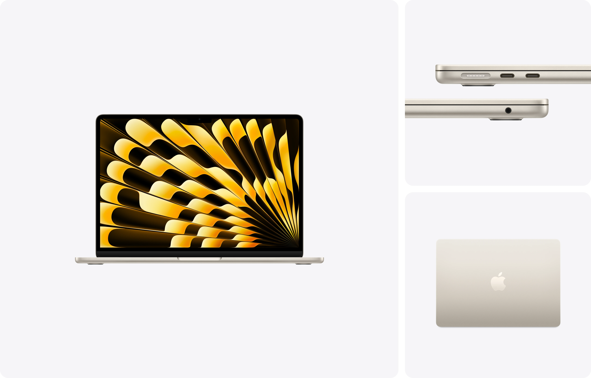

ノートPCが壊れてしまった話
はじめに
７月９日の夜，メモリを拡張しようとしてオンボードのメモリを無理やり外したところ，復旧が絶望的になってしまいました（笑）． 諦めることも肝心なのでもう良い機会としてPCを買い替えてしまおうと思います． ということでPC選定記録をここに残します． （ちなみに今は学校から間に合わせPCを借りています．） この記録が情報系学科新入生などの参考になれば幸いです．
今のPCについて
用途と展望
今の用途
- デュアルブート運用（80GBを割り当てて2つの環境を使い分け）
- アプリ制作（Unityを含む）
- Physical AI(主にSO-101)の機械学習・開発
- ローカルLLM（8B程度のモデル）の実行・検証
- 講義の受講（Zoom）
- ゲーム（ドラゴンクエストシリーズ，音ゲー（adofaiやosu!など））
- 資料作成（Microsoft OfficeやLaTeXなど）
- 競技プログラミング（AtCoder，パソコン甲子園（PCK））
将来の用途
卒業までを見据えて，次のようなことにも挑戦したいと考えています．
- DTM（作曲・音楽制作）
- 電気・電子回路の設計製図（2D/3D CADなど）
- マインクラフト
キャンパス移転後・高専卒業後について
来年（2027年度）に寝屋川キャンパスから中百舌鳥キャンパスへ引っ越しますが，それに伴って何かPC選定に影響があるかといえばないです． （通学時間や形態が変わらないので．） 卒業後は電気・電子工学と情報工学が学べる大学に編入したいなと思っています． 卒業までの２年＋編入後の院進までの２年間を見据えて，使えるPCを選ぼうと思います． 大学でもやりたいことはそんなに変わらないので上で述べた今・将来の用途に変わりはありません．
スペック
現在使用しているPCのスペックは以下の通りです．
| 項目 | 内容 |
|---|---|
| 機種 | Dell Inspiron 13 5330 |
| CPU | Intel Core Ultra5 125H |
| メモリ | 16GB（オンボード） |
| ストレージ | SSD 512GB |
| GPU | Intel Arc（内蔵） |
| ポート | HDMI×1，USB-A×1，USB-C×2 |
| その他 | 日本語配列，キーボードバックライト |
| 購入金額 | 12万円程度 |
今の不満
- デュアルブートしているため，ストレージ容量が足りない
- 各種オプションやプラグインを追加すると，さらにストレージを圧迫する
- ローカルLLMを動かす際，メモリ16GBでは不足しがち
- 同様の理由でGPU性能（グラボ）も不足している
- メモリがオンボード仕様のため，あとから増設できない
- 画像認識やPhysical AIの学習にはCUDA（NVIDIA製GPU向けの並列計算基盤）が必要だが，Intel Arc搭載機のため利用できない
満足しているところ
不満たらたらですが，満足していることもあります．
Macbookのデザインがとても好きなのですが，デザインがそれに似ていて，作業のテンションが多少上がるのでそこは良かったです．

次に購入するPCに求めるスペック
最低要望（優先順位順）
- CUDA搭載GPU ― 理由：画像認識・Physical AIの機械学習に必須なため
- メモリ32GB ― 理由：今メモリ使用率が節約しても容易に90%に到達していることが多いから．
- ストレージ SSD 1TB ― 理由：現在の512GBで，今の空き容量が節約しまくって30GB程度．1TBは必須であるから．
- 予算 25万円程度以下 ― 理由：奨学金とアルバイト代で賄える限界がこの金額だから．高すぎたらデスクトップを買った方が安くなってくるから．
- 日本語配列 ― 理由：Ubutnuの初期設定で，Windowsと同じテンションでUS配列を選んで非常に面倒くさいことになり，内部配列とキーボード配列を統一することは大事だと感じたから．UbuntuでUS配列でも日本語を打てるようにしても何回も設定がリセットされて次はちゃんと日本語配列にしようと反省したから．
あれば望ましいもの
- ディスプレイ14インチ以上
- Ryzen CPU
- 拡張性のあるメモリ
- HDMI・USB-Aポート搭載
- キーボードバックライト
要望に含めないもの
- テンキーの有無
- ディスプレイの解像度や種類
PCの選定
PCの候補
候補①：Dell Alienware 15 DA15265

| 項目 | 内容 |
|---|---|
| 価格帯 | 282,480円 |
| CPU | AMD Ryzen™ 7 260 プロセッサー (24MB キャッシュ, 8 コア, 最大 5.1 GHz |
| メモリ | 32GB, 1x32GB, DDR5, 5600 MT/s |
| ストレージ | 1TB PCIe 4 SSD (Gen 4) |
| GPU | NVIDIA® GeForce RTX™ 3050, 6 GB GDDR6 |
| 画面サイズ | 15.3インチ |
| 重量 | 2.25 kg |
| その他 | Alienware ホワイト バックライト キーボード, 日本語 |
値段以外は完璧です！値段以外は．．．メモリの拡張も他の人の記事を見ている感じ出来そうです．PCを調べていて感じたのが，同じ性能のモデルだと，他社は34万円ほどしていました．今のPCもDellですが，18万円相当を12万円で購入しているのでDellはやはりかなり安いですね．
候補②：Apple MacBook Air

| 項目 | 内容 |
|---|---|
| 価格帯 | 314,800円 |
| CPU | M5チップ10コアCPU |
| メモリ | 24GBユニファイドメモリ |
| ストレージ | 1TB SSDストレージ |
| GPU | 10コアGPU |
| 画面サイズ | 13インチ |
| 重量 | 1.23 kg |
| その他 | 16コアNeural Engine |
情報系でMacBook？！と思った方もいらっしゃるかもしれませんが，最近のAI業界のトレンドPCは見る感じMacbookです． 高専の情報系の先生でもMacbookを使っている方は多いので，ソフトの互換性とかもそこまで問題ないのだろうと思います（仮想Windowsを立ち上げるなどして解決してそうです．）． メモリの使い方も上手だという噂なので24GBでも足りるのかなと思っています．でもやはり値段がネックですね． ところでApple系のGPUということでCUDAには対応していませんがMacbookは機械学習に向いているそうなのでこちらも実際なんとかなりそうです．
最終的なPC
Dell Alienware 15 DA15265
上に挙げたPC以外にも調べましたが，Dell以上に安いPCがありませんでした． また，Macbookと違ってWindows 11 Home，CUDA対応といったものがあるのでこちらにいたしました． 予算オーバーに関しては，私が成人しているというのもあるので，分割払いを活用したり，アルバイトを頑張ったりして賄おうと思います．
さいごに
PCが壊れるという出来事は想定外でしたが，あらためて自分の使い方を整理してみると，何を優先すべきかが見えてきました． PCを選んでいる時にAIバブル前の価格感だったので，正直に言えば，この性能で30万？！という感想でいっぱいでした． そういうのもあって，次のPCが大学卒業まで，もっといえば修士課程あたりまで安心して使えるパートナーになってくれればと思います．